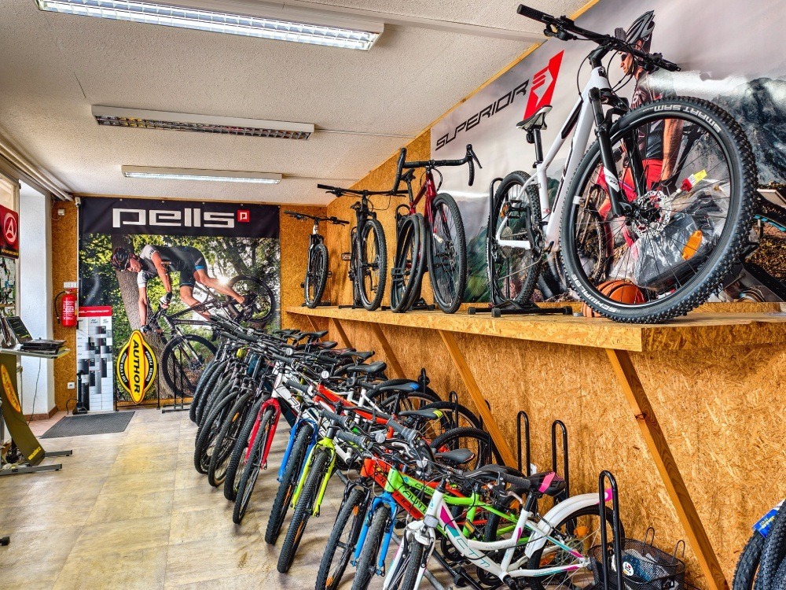
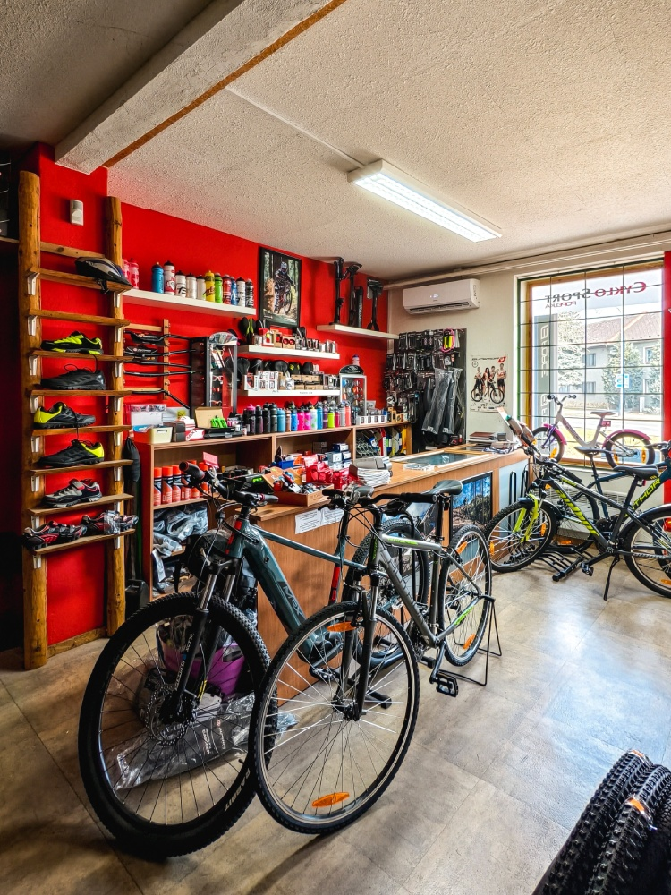
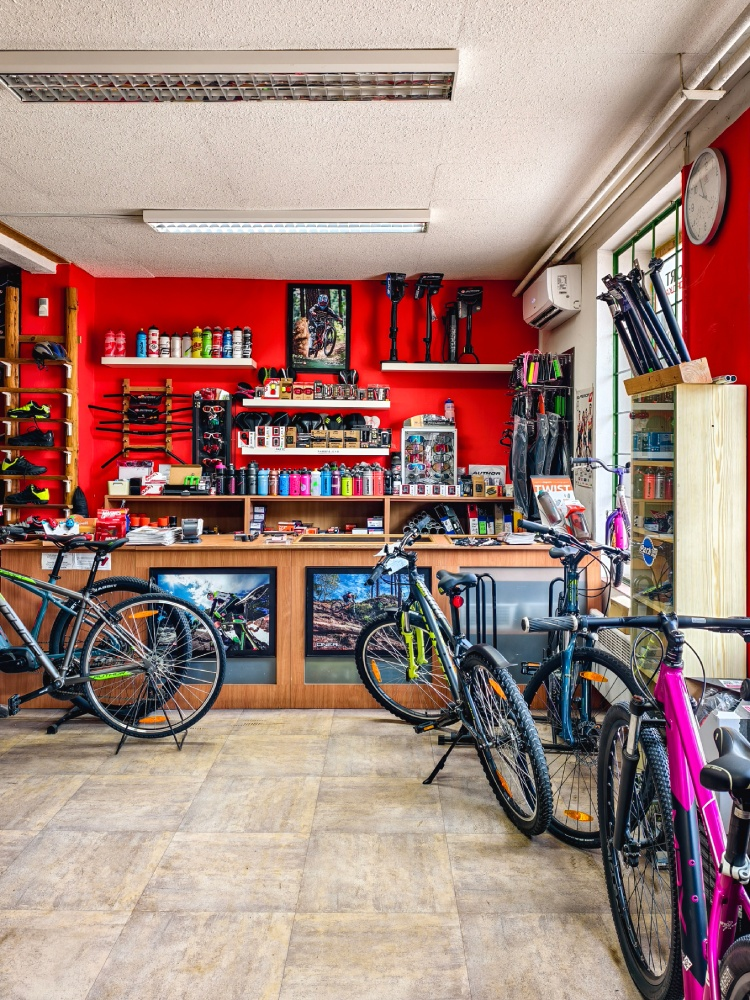
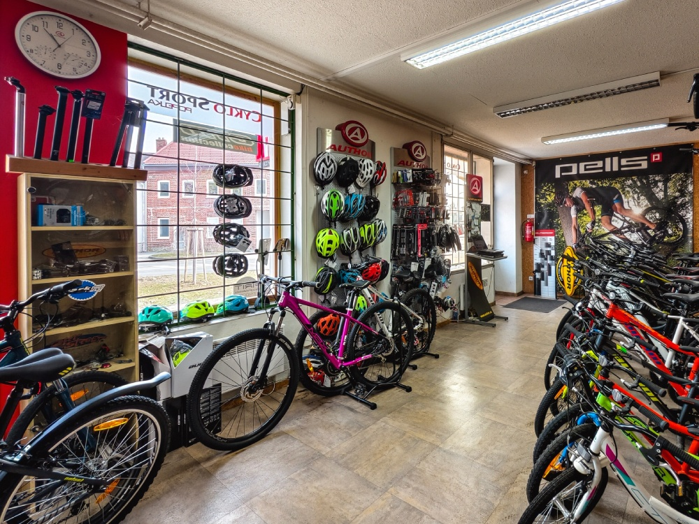
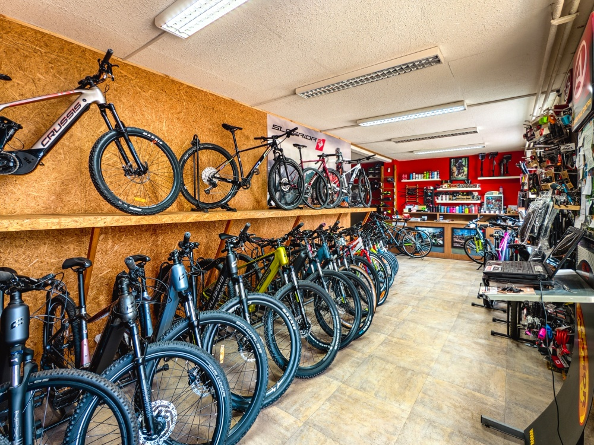
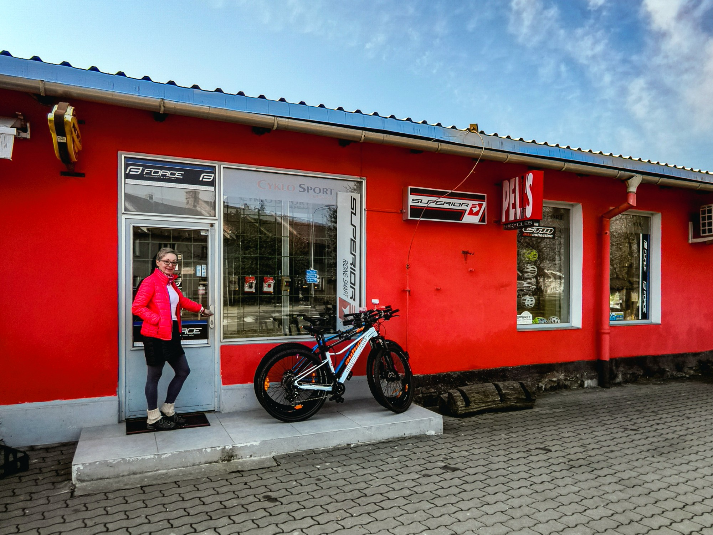

Jízdní kola a elektrokola
Poradíme vám s výběrem vhodného kola pro vás i vaše děti, na výlet i do terénu. Nabízíme kola značek Author, Superior, CTM, Rock Machine, Pells, elektrokola Crussis a další.
Zjistit víceProdej a servis
jízdních kol a elektrokol
Staráme se o vaše kola už 25 let. Přijďte si vybrat své nové kolo nebo se objednejte na
servis.
Po–Pá: 9:00–12:00 a 13:00–16:00
Poradíme vám s výběrem vhodného kola pro vás i vaše děti, na výlet i do terénu. Nabízíme kola značek Author, Superior, CTM, Rock Machine, Pells, elektrokola Crussis a další.
Zjistit víceSeřídíme, opravíme a připravíme vaše kolo na sezónu. Provádíme také montáž elektrosad a přestavby klasických kol na elektrokola. Na servis se vždy předem telefonicky objednejte.
Zjistit víceU nás nakoupíte přilby, zámky, brašny, nosiče, osvětlení, cyklopočítače, cyklistické oblečení i mnoho dalšího včetně náhradních dílů. Doplňky vám rádi na kolo i namontujeme.
Zjistit víceAť hledáte kolo do města, na výlety, do terénu nebo elektrokolo, pomůžeme vám najít to pravé. S výběrem vám poradíme osobně v naší prodejně v Lutíně u Olomouce.
Máme kola skladem, která si můžete ihned vyzkoušet a odvézt. A pokud nenajdete přesně to, co hledáte, kolo vám rádi objednáme přímo u výrobce.
Prodáváme značky, kterým důvěřujeme a za jejichž kvalitou si stojíme.
Certifikace a partnerství


Postaráme se o vaše kolo od defektu až po kompletní přípravu na sezónu. Provádíme servis všech typů kol včetně elektrokol a umíme i přestavby klasických kol na elektropohon.
Na servis se předem objednejte telefonicky.
+420 724 860 002Ke každému kolu patří správné vybavení. U nás najdete vše potřebné pro bezpečnou a pohodlnou jízdu, od přileb a zámků až po náhradní díly a maziva.
Doplňky vám rádi na kolo i namontujeme.




Cyklosport Popelka jsme založili v roce 1999 jako rodinný podnik a tradici poctivého přístupu ke kolům i zákazníkům v něm udržujeme dodnes. Za 25 let jsme se stali oblíbeným místem pro cyklisty z Lutína i širokého okolí Olomouce.
„Baví mě, když zákazník přijde s konkrétní představou a my mu pomůžeme ji naplnit, nebo ji trošku poupravíme, protože víme, co mu bude opravdu sedět. Jsme malý obchod a to je naše výhoda. Každého zákazníka osobně poznáme a na každé kolo si najdeme čas."Magda Popelková, provozovatelka Cyklosportu Popelka
Přijďte si vybrat kolo nebo se objednejte na servis. Jsme tu pro vás.
+420 724 860 002